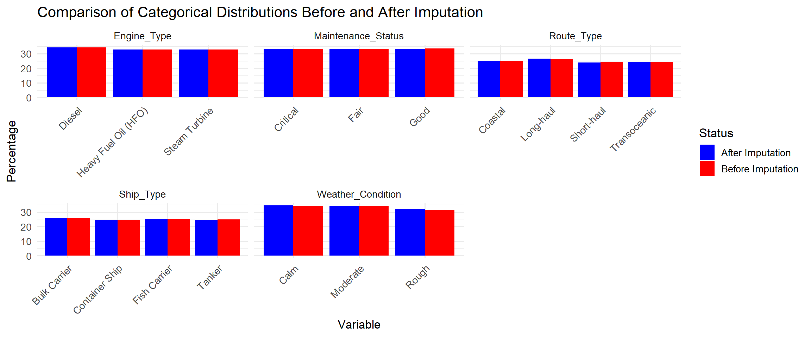
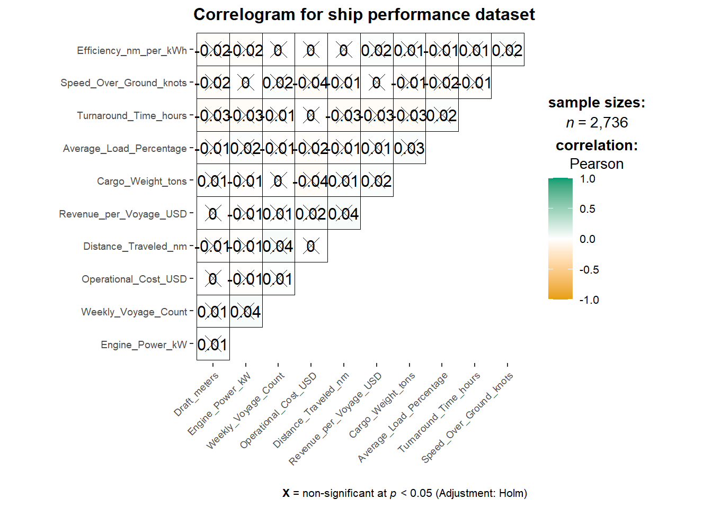
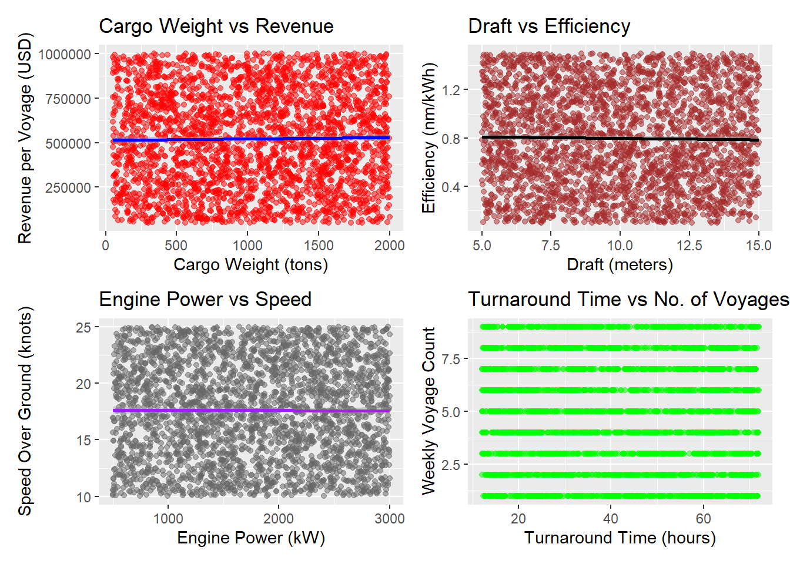
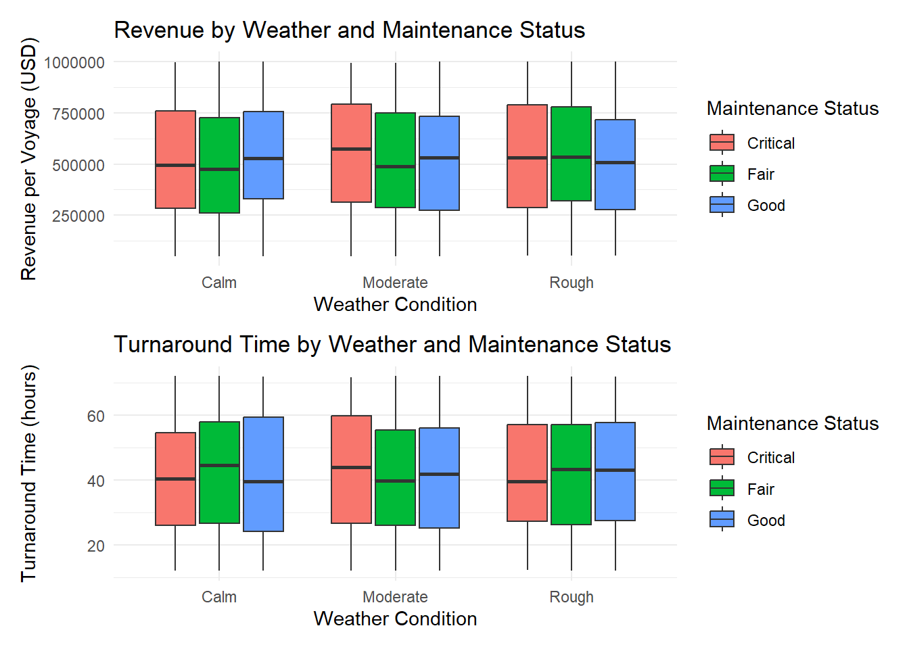
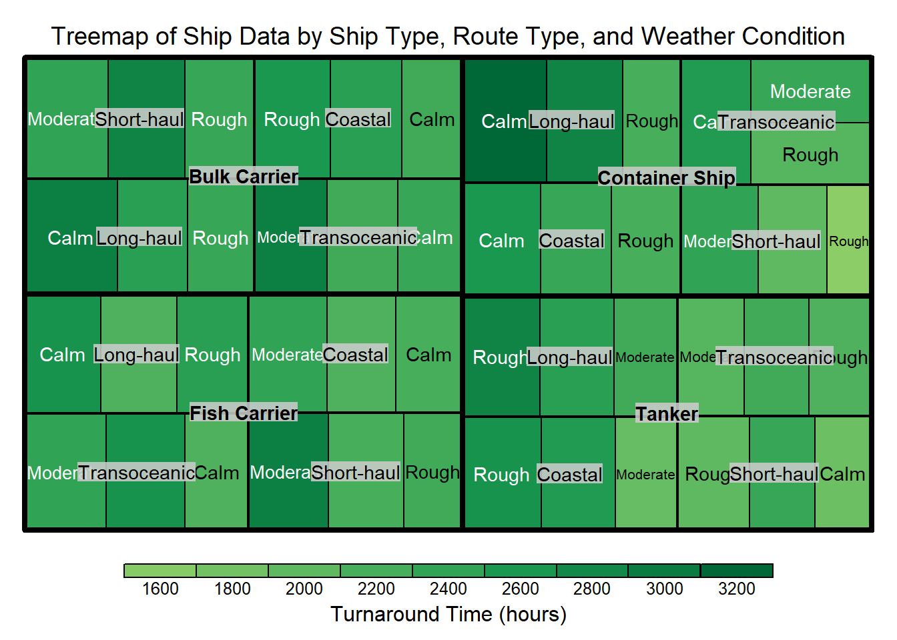
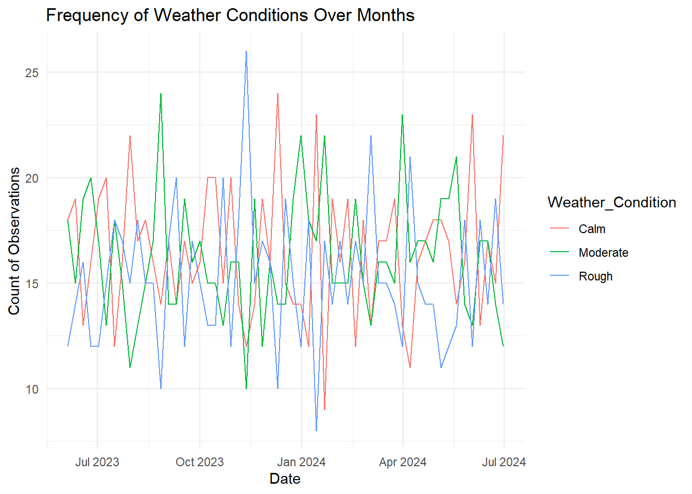
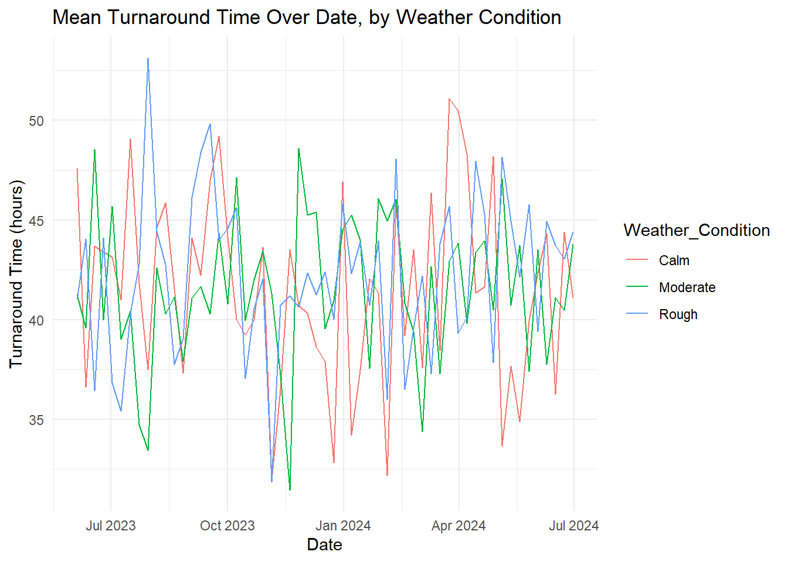

pacman::p_load(SmartEDA, plotly, ggstatsplot, treemap, tidyverse)Take Home Exercise 01: Insights in Shipping Data
Overview
The maritime sector a critical component of global trade, contributing significantly to increasing standards of living around the world, and requiring sustainability in this changing economic climate. Understanding ship performance, fuel efficiency, and operational cost factors are essential for improving decision-making and minimizing environmental impact.
Loading Data
We will be using the Ship Performance Dataset, which is synthetic data generated to realistically represent key operational metrics and attributes of different ship types in the Gulf of Guinea in Africa. This will enable us to perform maritime data analytics for clustering, prediction, and optimization of the industry.
ship_performance <- read_csv("data/Ship_Performance_Dataset.csv")The dataset consists of 2736 rows and 18 columns, with features split into numerical and categorical types.
EDA and Visualisations
We first perform some exploratory data analysis to better understand what we are working with.
View the first few rows
head(ship_performance)# A tibble: 6 × 18
Date Ship_Type Route_Type Engine_Type Maintenance_Status
<date> <chr> <chr> <chr> <chr>
1 2023-06-04 Container Ship None Heavy Fuel Oil (HFO) Critical
2 2023-06-11 Fish Carrier Short-haul Steam Turbine Good
3 2023-06-18 Container Ship Long-haul Diesel Fair
4 2023-06-25 Bulk Carrier Transoceanic Steam Turbine Fair
5 2023-07-02 Fish Carrier Transoceanic Diesel Fair
6 2023-07-09 Fish Carrier Long-haul Heavy Fuel Oil (HFO) Fair
# ℹ 13 more variables: Speed_Over_Ground_knots <dbl>, Engine_Power_kW <dbl>,
# Distance_Traveled_nm <dbl>, Draft_meters <dbl>, Weather_Condition <chr>,
# Cargo_Weight_tons <dbl>, Operational_Cost_USD <dbl>,
# Revenue_per_Voyage_USD <dbl>, Turnaround_Time_hours <dbl>,
# Efficiency_nm_per_kWh <dbl>, Seasonal_Impact_Score <dbl>,
# Weekly_Voyage_Count <dbl>, Average_Load_Percentage <dbl>Check for duplicated and missing values
sum(duplicated(ship_performance))[1] 0There are no duplicated rows
colSums(is.na(ship_performance)) Date Ship_Type Route_Type
0 0 0
Engine_Type Maintenance_Status Speed_Over_Ground_knots
0 0 0
Engine_Power_kW Distance_Traveled_nm Draft_meters
0 0 0
Weather_Condition Cargo_Weight_tons Operational_Cost_USD
0 0 0
Revenue_per_Voyage_USD Turnaround_Time_hours Efficiency_nm_per_kWh
0 0 0
Seasonal_Impact_Score Weekly_Voyage_Count Average_Load_Percentage
0 0 0 According to the above code chunk, all the columns have 0 missing values, but visual inspection of the first 5 rows reveal the existence of missing-like values such as “None”. This suggests that those missing values are not being recognized as NA.
We will change the missing values in categorical columns to NA and recheck for missing values.
ship_performance <- ship_performance %>%
mutate(across(where(is.character), ~na_if(.x, "None")))
colSums(is.na(ship_performance)) Date Ship_Type Route_Type
0 136 136
Engine_Type Maintenance_Status Speed_Over_Ground_knots
136 136 0
Engine_Power_kW Distance_Traveled_nm Draft_meters
0 0 0
Weather_Condition Cargo_Weight_tons Operational_Cost_USD
136 0 0
Revenue_per_Voyage_USD Turnaround_Time_hours Efficiency_nm_per_kWh
0 0 0
Seasonal_Impact_Score Weekly_Voyage_Count Average_Load_Percentage
0 0 0 We can see now that four columns “Ship_Type”, “Route_Type”, “Engine_Type”, “Maintenance_Status” have missing values, and that each column has exactly 136 missing data. We check how many unique rows contain missing values:
rows_missing <- ship_performance %>%
distinct() %>%
filter(rowSums(is.na(.)) > 0) %>%
nrow()
cat("Percentage of rows with missing values:", (rows_missing / nrow(ship_performance)) * 100, "%")Percentage of rows with missing values: 22.25877 %Since the percentage of rows with missing values is high, instead of dropping rows and missing critical data, we will inpute data based on the distribution
set.seed(42) # Ensure reproducibility
# Function to impute categorical columns based on their frequency distribution
impute_categorical <- function(column) {
missing_indices <- which(is.na(column))
if (length(missing_indices) > 0) {
column[missing_indices] <- sample(column[!is.na(column)],
length(missing_indices), replace = TRUE)
}
return(column)
}
# Apply to all categorical columns (where data type is character)
ship_performance_imputed <- ship_performance %>%
mutate(across(where(is.character), impute_categorical))We can check whether the distribution of data before and after imputation is the same visually, first by extracting the relevant data.
# Get categorical column names
categorical_columns <- names(ship_performance)[sapply(ship_performance, is.character)]
# Function to get the distribution of data
get_percent_distribution <- function(data, column) {
freq_table <- table(data[[column]], useNA = "no")
freq_df <- as.data.frame(freq_table, responseName = "Count") %>%
mutate(
Percent = Count / sum(Count) * 100,
Variable = column
)
# Rename the classes and reorder the data.frame
colnames(freq_df)[1] <- "Classes"
return(freq_df)
}
distributions_before <- lapply(categorical_columns, function(col) {
freq_df <- get_percent_distribution(ship_performance, col)
freq_df$Status <- "Before Imputation"
freq_df
}) %>% bind_rows()
# Get distributions after imputation
distributions_after <- lapply(categorical_columns, function(col) {
freq_df <- get_percent_distribution(ship_performance_imputed, col)
freq_df$Status <- "After Imputation"
freq_df
}) %>% bind_rows()
distributions_combined <- bind_rows(distributions_before, distributions_after)We then plot the distribution of the missing categorical data after and before it has been imputed.
ggplot(distributions_combined, aes(x = Classes, y = Percent, fill = Status)) +
geom_col(position = "dodge") +
facet_wrap(~ Variable, scales = "free_x") + # separate plot for each categorical column
theme_minimal(base_size = 13) +
labs(
title = "Comparison of Categorical Distributions Before and After Imputation",
x = "Variable",
y = "Percentage"
) +
theme(
axis.text.x = element_text(angle = 45, hjust = 1) # tilt x-axis labels if needed
) +
scale_fill_manual(values = c("Before Imputation" = "Red",
"After Imputation" = "Blue"))
Explanation
The bar graph illustrates how several categorical variables “Engine_Type”, “Maintenance_Status”, “Route_Type”, “Ship_Type”, and “Weather_Condition” are distributed before and after the imputation of missing data. We can see that the proportions of each category remain largely consistent, indicating that the chosen imputation method did not introduce noticeable bias or distort the original distribution, and is stable. This stability suggests that the imputation process preserved the core structure of the dataset. Consequently, subsequent analyses that rely on these categorical variables can be expected to yield reliable results as the approach to handling missing values maintained the representativeness of the underlying categorical features.
Analyse the structure of the dataset
ship_performance_imputed %>%
ExpData(type = 2) Index Variable_Name Variable_Type Sample_n Missing_Count
1 1 Date Date 2736 0
2 2 Ship_Type character 2736 0
3 3 Route_Type character 2736 0
4 4 Engine_Type character 2736 0
5 5 Maintenance_Status character 2736 0
6 6 Speed_Over_Ground_knots numeric 2736 0
7 7 Engine_Power_kW numeric 2736 0
8 8 Distance_Traveled_nm numeric 2736 0
9 9 Draft_meters numeric 2736 0
10 10 Weather_Condition character 2736 0
11 11 Cargo_Weight_tons numeric 2736 0
12 12 Operational_Cost_USD numeric 2736 0
13 13 Revenue_per_Voyage_USD numeric 2736 0
14 14 Turnaround_Time_hours numeric 2736 0
15 15 Efficiency_nm_per_kWh numeric 2736 0
16 16 Seasonal_Impact_Score numeric 2736 0
17 17 Weekly_Voyage_Count numeric 2736 0
18 18 Average_Load_Percentage numeric 2736 0
Per_of_Missing No_of_distinct_values
1 0 57
2 0 4
3 0 4
4 0 3
5 0 3
6 0 2736
7 0 2736
8 0 2736
9 0 2736
10 0 3
11 0 2736
12 0 2736
13 0 2736
14 0 2736
15 0 2736
16 0 2736
17 0 9
18 0 2736The categorical features consist of the following:
- Ship_Type: Type of ship (e.g., Tanker, Container Ship, Fish Carrier, Bulk Carrier).
- Route_Type: Shipping route type (e.g., Short-haul, Long-haul, Transoceanic).
- Engine_Type: Type of engine (e.g., Diesel, Heavy Fuel Oil).
- Maintenance_Status: Maintenance condition of the ship (e.g., Fair, Critical, Good).
- Weather_Condition: Prevailing weather conditions during voyages (e.g., Calm, Moderate, Rough).
The numerical features are highlighted by the following:
- Speed_Over_Ground_knots: Average speed of the ship over water (in knots).
- Engine_Power_kW: Engine power output (in kilowatts).
- Distance_Traveled_nm: Total distance traveled by the ship (in nautical miles).
- Operational_Cost_USD: Total operational cost per voyage (in USD).
- Revenue_per_Voyage_USD: Revenue generated per voyage (in USD).
- Efficiency_nm_per_kWh: Energy efficiency calculated in nautical miles per kilowatt-hour.
We will drop the column “Seasonal_Impact_Score” as it has no context and we can’t understand what the numbers represent.
ship_performance_imputed <- ship_performance_imputed %>%
select(-Seasonal_Impact_Score)Extract summary statistics
summary(ship_performance_imputed) Date Ship_Type Route_Type Engine_Type
Min. :2023-06-04 Length:2736 Length:2736 Length:2736
1st Qu.:2023-09-10 Class :character Class :character Class :character
Median :2023-12-17 Mode :character Mode :character Mode :character
Mean :2023-12-17
3rd Qu.:2024-03-24
Max. :2024-06-30
Maintenance_Status Speed_Over_Ground_knots Engine_Power_kW
Length:2736 Min. :10.01 Min. : 501
Class :character 1st Qu.:13.93 1st Qu.:1148
Mode :character Median :17.71 Median :1757
Mean :17.60 Mean :1758
3rd Qu.:21.28 3rd Qu.:2383
Max. :25.00 Max. :2999
Distance_Traveled_nm Draft_meters Weather_Condition Cargo_Weight_tons
Min. : 50.43 Min. : 5.002 Length:2736 Min. : 50.23
1st Qu.: 548.51 1st Qu.: 7.437 Class :character 1st Qu.: 553.98
Median :1037.82 Median : 9.919 Mode :character Median :1043.21
Mean :1036.41 Mean : 9.929 Mean :1032.57
3rd Qu.:1540.93 3rd Qu.:12.413 3rd Qu.:1527.72
Max. :1998.34 Max. :14.993 Max. :1999.13
Operational_Cost_USD Revenue_per_Voyage_USD Turnaround_Time_hours
Min. : 10092 Min. : 50352 Min. :12.02
1st Qu.:131293 1st Qu.:290346 1st Qu.:26.17
Median :257158 Median :520177 Median :41.59
Mean :255143 Mean :521362 Mean :41.75
3rd Qu.:381797 3rd Qu.:750073 3rd Qu.:57.36
Max. :499735 Max. :999917 Max. :71.97
Efficiency_nm_per_kWh Weekly_Voyage_Count Average_Load_Percentage
Min. :0.1002 Min. :1.000 Min. : 50.01
1st Qu.:0.4636 1st Qu.:3.000 1st Qu.: 62.70
Median :0.7899 Median :5.000 Median : 75.50
Mean :0.7987 Mean :4.915 Mean : 75.22
3rd Qu.:1.1474 3rd Qu.:7.000 3rd Qu.: 87.72
Max. :1.4993 Max. :9.000 Max. :100.00 Data Exploration
Correlation of Numerical Variables
We start with using ggcorrmat() of ggstatsplot package to visualise a correlation matrix for our data exploration. This function computes pairwise correlation coefficients and their corresponding p-values, displaying them in a heatmap-style plot. The graphical output makes it easy to spot which pairs of variables have strong positive or negative relationships, as well as which variables are largely uncorrelated. This initial overview helps us identify potential multi-collinearity problems and guides us toward which variables may be most influential in downstream analyses or predictive models.
ggcorrmat(
data = ship_performance_imputed,
cor.vars = 6:17,
ggcorrplot.args = list(outline.color = "black",
hc.order = TRUE,
tl.cex = 7),
title = "Correlogram for ship performance dataset"
)
Explanation
All correlations appear statistically nonsignificant (marked with “X”), indicating that these variables may not share strong linear associations. The color scale is from gold to green, but the matrix is all coloured in white. Overall, the distribution of modest correlations suggests that the chosen metrics operate independently. Given the presence of these nonsignificant results, deeper analysis might consider nonlinear patterns or variables not reflected here. In particular, identifying the operational drivers of efficiency and profitability could benefit from more detailed modeling or domain-specific insights. Nonetheless, this initial overview highlights areas where further study may prove most valuable.
We confirm this by creating scatterplots for a few key pairs of variables. For instance, plotting “Cargo_Weight_tons” against “Revenue_per_Voyage_USD” visually examines whether heavier shipments indeed correlate with higher earnings, as one might expect. The resulting plot can reveal outliers or nonlinear patterns that are missed by simple correlation coefficients. By repeating this approach with other relevant variables, such as Operational_Cost_USD or Turnaround_Time_hours, we gain a clearer picture to guide us toward more targeted modeling.
p1 <- ggplot(ship_performance_imputed, aes(x = Cargo_Weight_tons, y = Revenue_per_Voyage_USD)) +
geom_point(alpha = 0.5, color = "red") +
geom_smooth(method = "lm", color = "blue") +
labs(title = "Cargo Weight vs Revenue", x = "Cargo Weight (tons)", y = "Revenue per Voyage (USD)")
p2 <- ggplot(ship_performance_imputed, aes(x = Draft_meters, y = Efficiency_nm_per_kWh)) +
geom_point(alpha = 0.5, color = "brown") +
geom_smooth(method = "lm", color = "black") +
labs(title = "Draft vs Efficiency", x = "Draft (meters)", y = "Efficiency (nm/kWh)")
p3 <- ggplot(ship_performance_imputed, aes(x = Engine_Power_kW, y = Speed_Over_Ground_knots)) +
geom_point(alpha = 0.5, color = "grey40") +
geom_smooth(method = "lm", color = "purple") +
labs(title = "Engine Power vs Speed", x = "Engine Power (kW)", y = "Speed Over Ground (knots)")
p4 <- ggplot(ship_performance_imputed, aes(x = Turnaround_Time_hours, y = Weekly_Voyage_Count)) +
geom_point(alpha = 0.5, color = "green") +
labs(title = "Turnaround Time vs No. of Voyages", x = "Turnaround Time (hours)", y = "Weekly Voyage Count")
(p1 + p2) / (p3 + p4)
Explanation
The color points in the plots above each highlight a data observation, while the straight line depicts a linear regression fit to giving a quick read on trend direction and any outliers that may exist. The near‐horizontal lines in these examples confirm that the variables are not correlated, or at least that any relationship is not linear. Future steps would involve drilling down into each individual relationship to confirm whether certain ranges of values display different patterns, or if additional variables might moderate the relationship.
Categorical Data
We try to visualise the effect of “Weather” and Maintenance Status”, which are categorical varaibles, on “Revenue” and “Turnaround Time” respectively.
p5 <- ggplot(ship_performance_imputed, aes(x = Weather_Condition,
y = Revenue_per_Voyage_USD,
fill = Maintenance_Status)) +
geom_boxplot() +
labs(
title = "Revenue by Weather and Maintenance Status",
x = "Weather Condition",
y = "Revenue per Voyage (USD)",
fill = "Maintenance Status"
) +
theme_minimal()
p6 <- ggplot(ship_performance_imputed, aes(x = Weather_Condition,
y = Turnaround_Time_hours,
fill = Maintenance_Status)) +
geom_boxplot() +
labs(
title = "Turnaround Time by Weather and Maintenance Status",
x = "Weather Condition",
y = "Turnaround Time (hours)",
fill = "Maintenance Status"
) +
theme_minimal()
p5 / p6
Explanation
In these boxplots, we can see that revenue and turnaround time vary slightly across different weather conditions (calm, moderate, and rough) and maintenance statuses (critical, fair, and good). However, the overall differences appear relatively minor, suggesting that neither weather nor maintenance category dramatically influences performance. Although there are some small shifts in median revenue when comparing, for instance, “critical” vessels under rough conditions or “good” vessels under moderate conditions, these changes are not especially pronounced. Similarly, turnaround times show only modest variations across categories, with some slight increases under rough weather and critical maintenance status, yet these do not seem substantial. We can see no major outliers or clear patterns of drastically higher or lower values for specific categories. Overall, the patterns suggest that any differences in revenue or turnaround time are not particularly significant. No notable impact on operations is detected.
Treemaps
We use a treemap to visualize hierarchical data—making it easier to spot patterns and relationships across multiple categorical dimensions at a glance
treemap(ship_performance_imputed,
index = c("Ship_Type", "Route_Type", "Weather_Condition"), # Hierarchy
vSize = "Revenue_per_Voyage_USD", # Rectangle size
vColor = "Turnaround_Time_hours", # Rectangle color
type = "value",
title = "Treemap of Ship Data by Ship Type, Route Type, and Weather Condition",
title.legend = "Turnaround Time (hours)"
)
Explanation
This treemap is divided by “Ship_Type”, then “Route_Type”, and finally by “Weather_Condition.” Each category is represented as a rectangle whose area is proportional to total revenue (Revenue_per_Voyage_USD). The color of each rectangle corresponds to Turnaround_Time_hours.
The results indicate that Container Ships on coastal routes under calm weather generate high revenue, while Bulk Carriers operating long-haul in rough conditions exhibit extended turnaround times surpassing 3,000 hours. Meanwhile, shorter routes in moderate weather generally show moderate earnings but efficient turnaround below 2,000 hours. These findings highlight potential operational optimizations, such as focusing on schedules for ships frequently exposed to adverse conditions, improving efficiency in the port.
Time Series
We plot a time series to view any possible seasonality.
weather <- ship_performance_imputed %>%
group_by(Date, Weather_Condition) %>%
summarize(Count = n(), .groups = 'drop')
# Line plot of weather counts over time
ggplot(weather, aes(x = Date, y = Count, color = Weather_Condition)) +
geom_line() +
labs(
title = "Frequency of Weather Conditions Over Months",
x = "Date",
y = "Count of Observations"
) +
theme_minimal()
Explanation
There’s no obvious, repeating cycle that clearly indicates classic seasonality in the weather.
TAT_weather <- ship_performance_imputed %>%
group_by(Date, Weather_Condition) %>%
summarize(Mean_TAT = mean(Turnaround_Time_hours), .groups = 'drop')
# 3. Plot the time series
ggplot(TAT_weather, aes(x = Date,
y = Mean_TAT,
color = Weather_Condition)) +
geom_line() +
labs(
title = "Mean Turnaround Time Over Date, by Weather Condition",
x = "Date",
y = "Turnaround Time (hours)"
) +
theme_minimal()
Explanation
The lines appear irregular and interwoven, showing no clear or repeating patterns (e.g., no predictable peaks and troughs at regular intervals). We therefore can’t conclude any strong seasonality or distinct trend in turnaround times by weather condition solely from this time-series plot
Conclusion
Overall, our exploratory data analysis suggests that the dataset does not exhibit many clear, strong patterns or obvious cycles. Variables like turnaround time, speed, and efficiency show substantial variability without forming distinct trends. Even time-series plots by weather condition indicate no persistent cyclical behavior.
The treemap provides preliminary insights—like the high revenue of Container Ships on calm-weather coastal routes and the lengthy turnaround times of Bulk Carriers in rough conditions—yet these observations warrant deeper investigation. Additional data, such as detailed cost structures or refined weather metrics, would help validate and expand upon these findings, enabling more targeted strategies to optimize scheduling and improve operational efficiency.